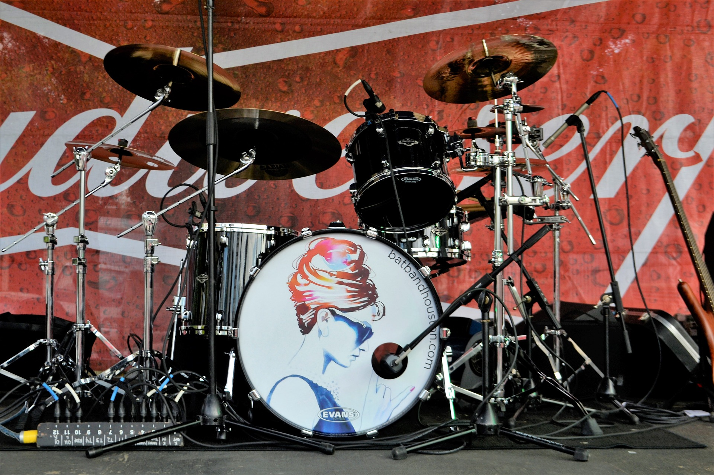

那时的马山芋，刚出道的马山芋，是神马样呢？单薄的小身板儿，迎风就倒；头毛比现在浓密；门牙露缝；唱着“你根本无视我”的桑感小情歌。总之，一个大写的文艺青年。
自成立之初就以“坚持做中国特色的摇滚乐”为宗旨，将东北二人转的音乐元素与现代摇滚乐不露声色的嫁接。夸张的表演和舞台造型、戏谑的唱词、民乐的奇幻运用，构成了二手玫瑰独特的乐队风格。
2019-10-16 09:54:07
“迷笛音乐节”（Midi Festival）是由中国地下摇滚乐队的发源地——北京迷笛音乐学校创办的国内第一个原创音乐节，经过十多年的发展，已成为现代音乐最响亮的品牌之一。
2019-10-16 09:54:07

唐朝乐队是中国最出名的摇滚乐队之一他们是最早一批的中国摇滚圈音乐人当年的毛头小子们都已变成大叔赵叔叔更是我们中国鼓手界的骄傲在此我们年轻人要向他们致敬！唐朝零点黑豹在中国已经不仅仅是一支摇滚乐队更是一个时代的骄傲一面久久飘扬的旗帜。
2019-10-16 09:54:07